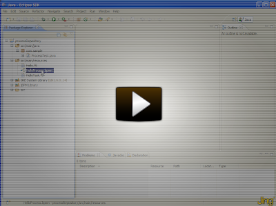

A process repository using Guvnor
A process repository is an important part of your BPM architecture if you start using more and more business processes in your applications and especially if you want to have the ability to dynamically update them. The process repository is the location where you store and manage your business processes. Because they are not deployed as part of your application, they have their own life cycle, meaning you can update your business processes dynamically, without having to change the application code.
Note that a process repository is a lot more than simply a database to store your process definitions. It almost acts as a combination of a source code management system, content management system, collaboration suite and development and testing environment. These are the kind of features you can expect from a process repository:
- Persistent storage of your processes so the latest version can always easily be accessed from anywhere, including versioning
- Build and deploy selected processes
- User-friendly (web-based) interface to manage, update and deploy your processes (targeted to business users, not just developers)
- Authentication / authorization to make sure only people that have the right role can see and/or edit your processes
- Categorization and searching
- Scenario testing to make sure you don’t break anything when you change your process
- Collaboration and other social features like comments, notifications on change, etc.
- Synchronization with your development environment
The following screencast shows how you can upload your process definition to Guvnor, along with the process form (that is used when you try to start a new instance of that process to collect the necessary data), task forms (for the human tasks inside the process), and the process image (that can be annotated to show runtime progress). The jbpm-console is configured to get all this information from Guvnor whenever necessary and show them in the console.

If you use the latest snapshot version of the jbpm-installer, that should automatically download and install the latest snapshot of Guvnor as well. So simply deploy your assets (for example using the Guvnor Eclipse integration as shown in the screencast, also automatically installed) to Guvnor (taking some naming conventions into account, as explained below), build the package and start up the console.
The current integration with the jbpm-console uses the following naming conventions to find the artefacts it needs (though we hope to update this to something more flexible in the near future):
- All artefacts should be deployed to the “defaultPackage” on Guvnor (as that is where the jbpm-console will be looking)
- A process should define “defaultPackage” as the package name (otherwise you won’t be able to build your package on Guvnor)
- Task forms that should be associated with a specific process definition should have the name “{processDefinitionId}.ftl“
- Task forms for a specific human task should have the name “{taskName}.ftl”
- The process diagram for a specific process should have the name “{processDefinitionId}-image.png”
If you follow these rules, your processes, forms and images should show up without any issues in the jbpm-console.